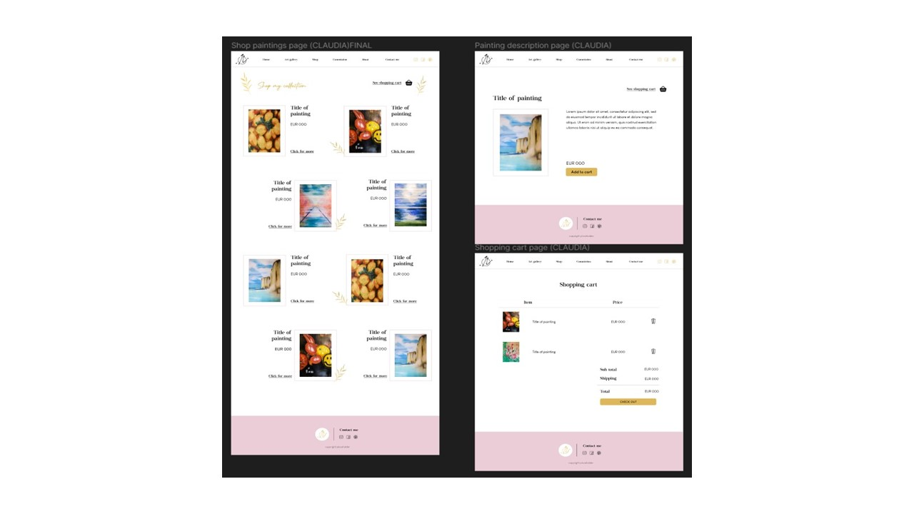
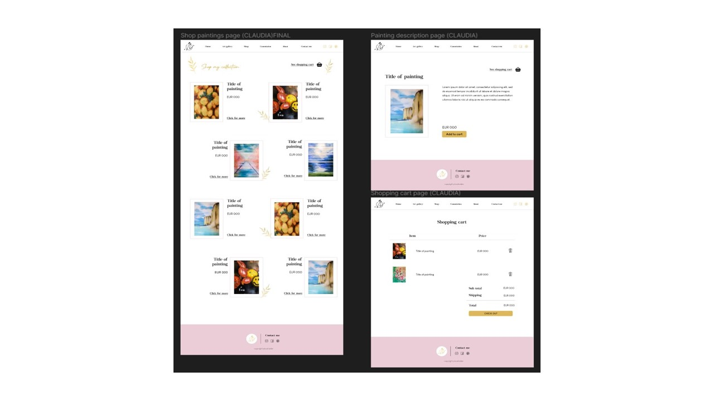
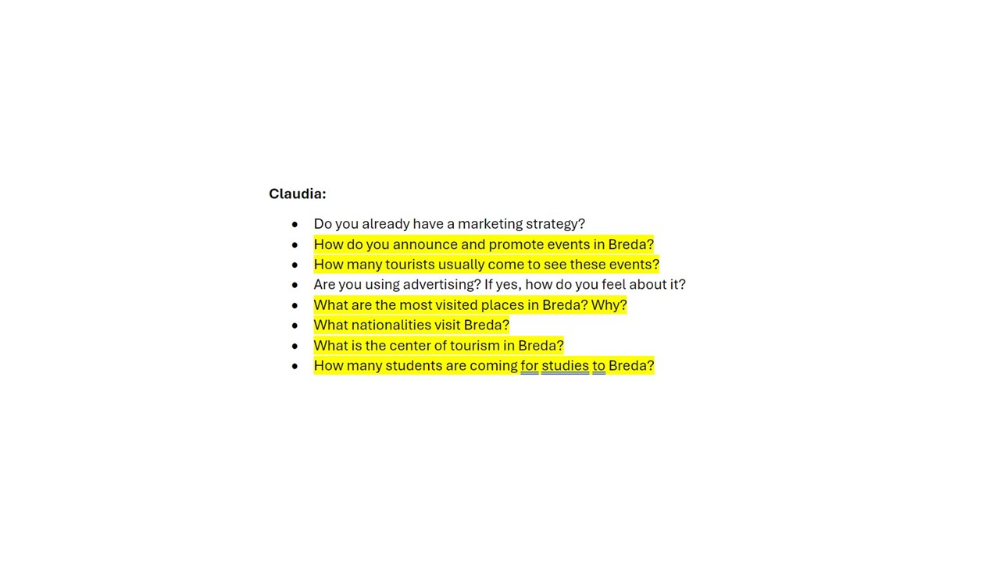
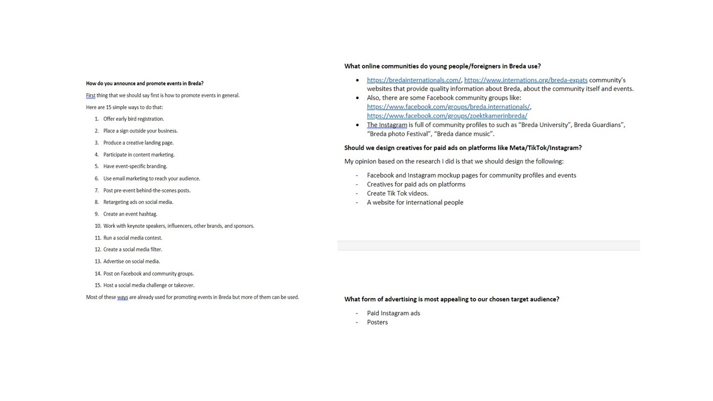
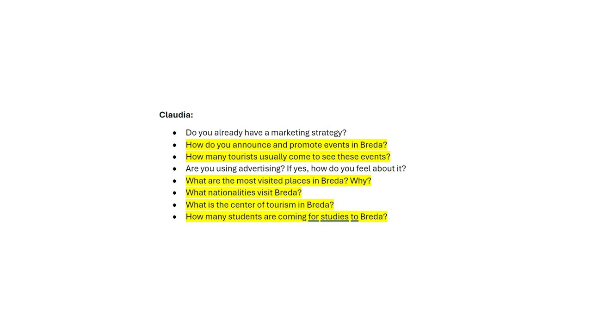
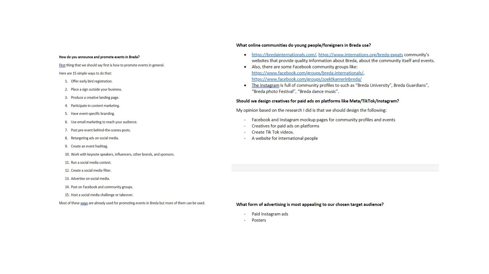
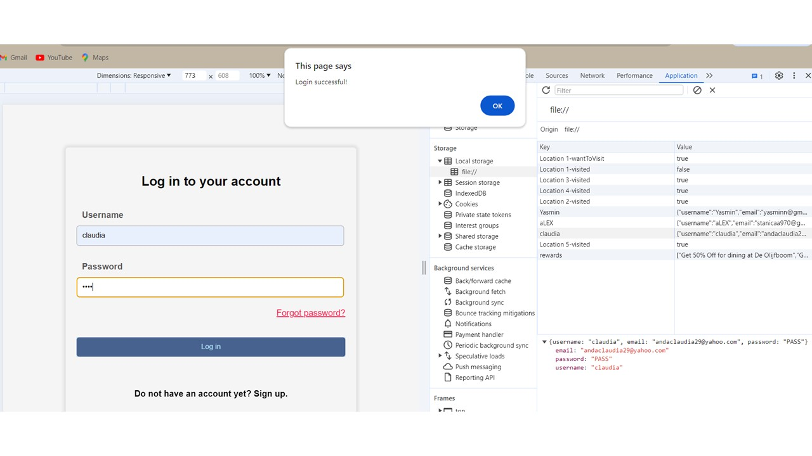
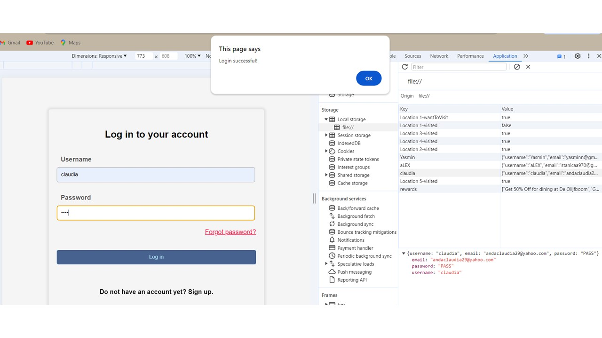

Branding project
In this document you will find my contribution in creating project documents such as the Project plan, project report, team charter, presentations that I created and presented and improvement in communication skills.
In this learning outcome content you will find my professional skills, and my improvement communication and creating documents such as Project plan and report. All information will be found in the presented PDF's.
Check out my work:
In this document you will find my contribution in creating project documents such as the Project plan, project report, team charter, presentations that I created and presented and improvement in communication skills.

.JPG)


 

In this document you will find my contribution in creating project documents such as the Project plan, project report, team charter, presentations that I created and presented and improvement in communication skills.
 



In this document you will find information about my participation in the discussions and research for this project.
 


In this document you will find information about the research process for this project. I used DOT framework methodology for my research process. During the reading my improvement in research is shown.